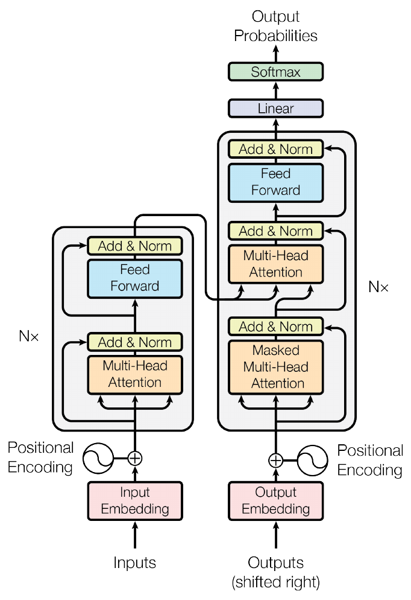
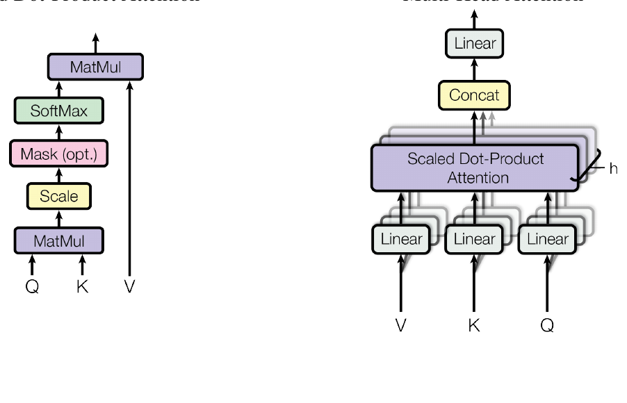
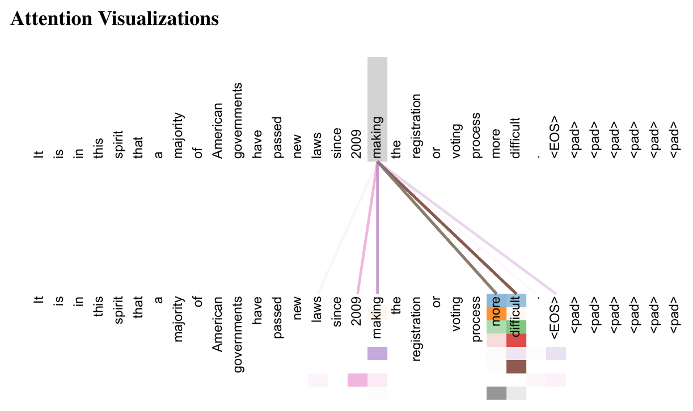
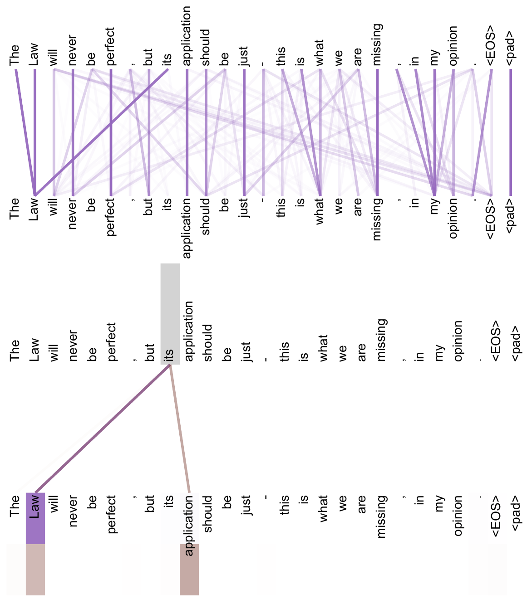
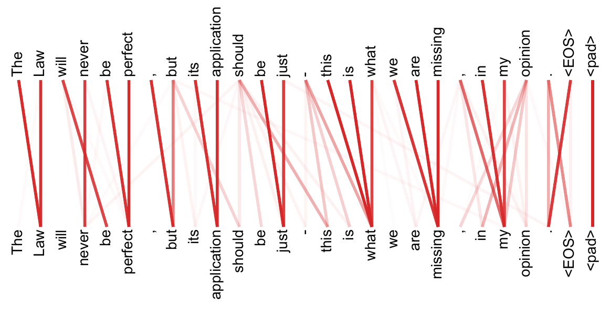

注意力就是你所需要的一切Attention Is All You Need
占据主导地位的序列转导模型都基于复杂的循环或卷积神经网络，并且包含一个编码器和一个解码器。性能最好的模型还会通过注意力机制把编码器与解码器连接起来。我们提出一种新的简单网络架构——Transformer，它完全基于注意力机制，彻底舍弃了循环与卷积。在两个机器翻译任务上的实验表明，这类模型在质量上更优，同时更易于并行化，训练所需时间也显著更少。我们的模型在 WMT 2014 英德翻译任务上取得 28.4 BLEU，超过此前的最好结果（包括集成模型）2 BLEU 以上。在 WMT 2014 英法翻译任务上，我们的模型在 8 个 GPU 上训练 3.5 天后，取得了 41.8 的单模型最新最好（state-of-the-art）BLEU 分数，而训练开销只是文献中最好模型的很小一部分。我们通过把 Transformer 成功应用于训练数据充足和有限两种情况下的英语成分句法分析，表明它能很好地泛化到其他任务。
本文正文、图表与参考文献均来自源 PDF 解析结果。专业术语、模型名、数据集名与人名按要求保留原文；术语上的金色虚线表示可悬停（触屏可点按）查看中文解释。参考文献整节保留英文原文不译。
∗ 贡献相同（Equal contribution）。作者排序为随机顺序。Jakob 提议用自注意力取代 RNN，并启动了对该想法的评估工作。Ashish 与 Illia 设计并实现了最初的 Transformer 模型，并在本工作的各个方面起到了关键作用。Noam 提出了缩放点积注意力、多头注意力以及无参数的位置表示，并且是几乎参与每一个细节的另一位作者。Niki 在最初的代码库与 tensor2tensor 中设计、实现、调优并评估了无数模型变体。Llion 也试验了新的模型变体，负责最初的代码库以及高效推理与可视化。Lukasz 与 Aidan 花费了无数个漫长的日子设计 tensor2tensor 的各个部分并加以实现，用它替换了先前的代码库，大幅改善了结果并极大地加速了我们的研究。
† 工作完成于就职 Google Brain 期间。‡ 工作完成于就职 Google Research 期间。
1 引言
循环神经网络，尤其是长短期记忆 [13] 和门控循环 [7] 神经网络，已被牢固地确立为序列建模与转导问题（如语言建模和机器翻译）中的最新最好方法 [35, 2, 5]。此后，大量工作持续推动循环语言模型与编码器—解码器架构的边界 [38, 24, 15]。
循环模型通常沿输入与输出序列的符号位置来分解计算。把位置对齐到计算时间的步，它们生成一个隐藏状态序列 ht，作为前一隐藏状态 ht−1 与位置 t 处输入的函数。这种内在的序列性使得训练样本内部无法并行化，而这一点在序列较长时变得至关重要，因为内存限制会约束跨样本的批处理规模。近期工作通过分解技巧 [21] 和条件计算 [32] 在计算效率上取得显著改进，后者同时改善了模型性能。然而，顺序计算这一根本限制依然存在。
注意力机制已成为各种任务中富有竞争力的序列建模与转导模型不可或缺的一部分，它使模型能够对依赖关系建模而不必考虑这些位置在输入或输出序列中的距离 [2, 19]。然而，除少数情况 [27] 之外，此类注意力机制都是与循环网络结合使用的。
在本工作中，我们提出 Transformer：一种摒弃循环、完全依靠注意力机制来刻画输入与输出之间全局依赖的模型架构。Transformer 允许显著更多的并行化，并且在 8 个 P100 GPU 上仅训练十二小时即可在翻译质量上达到新的最新最好水平。
2 背景
减少顺序计算这一目标，同样是 Extended Neural GPU [16]、ByteNet [18] 和 ConvS2S [9] 的基础：它们都以卷积神经网络为基本构件，为所有输入与输出位置并行地计算隐藏表示。在这些模型中，把两个任意输入或输出位置的信号关联起来所需的操作数会随位置间距离增长——对 ConvS2S 是线性增长，对 ByteNet 是对数增长。这使得学习相距较远位置之间的依赖更加困难 [12]。在 Transformer 中，这一数量被减少到常数级，代价是因对注意力加权位置取平均而降低了有效分辨率；我们用 3.2 节所述的多头注意力（Multi-Head Attention）来抵消这一效应。
自注意力（self-attention），有时也称内部注意力（intra-attention），是一种把单个序列的不同位置相互关联以计算该序列表示的注意力机制。自注意力已被成功用于多种任务，包括阅读理解、抽象式摘要、文本蕴含，以及学习任务无关的句子表示 [4, 27, 28, 22]。
端到端记忆网络基于循环注意力机制而非序列对齐的循环结构，已被证明在简单语言问答与语言建模任务上表现良好 [34]。
然而据我们所知，Transformer 是第一个完全依靠自注意力来计算其输入与输出表示、而不使用序列对齐 RNN 或卷积的转导模型。在随后的小节中，我们将描述 Transformer，说明采用自注意力的动机，并讨论它相对 [17, 18] 与 [9] 等模型的优势。
3 模型架构
大多数有竞争力的神经序列转导模型都采用编码器—解码器结构 [5, 2, 35]。这里，编码器把输入的符号表示序列 (x1, …, xn) 映射为连续表示序列 z = (z1, …, zn)。给定 z，解码器随后逐个元素地生成由符号构成的输出序列 (y1, …, ym)。每一步模型都是自回归的 [10]，在生成下一个符号时把此前已生成的符号作为额外输入。

Transformer 沿用这一总体架构，对编码器和解码器都使用堆叠的自注意力层与逐位置全连接层，分别如图 1 的左右两半所示。
3.1 编码器与解码器堆栈
编码器（Encoder）：编码器由 N = 6 个完全相同的层堆叠而成。每层包含两个子层。第一个是多头自注意力机制，第二个是简单的、逐位置的全连接前馈网络。我们对这两个子层各采用一次残差连接 [11]，随后接层归一化 [1]。也就是说，每个子层的输出为 LayerNorm(x + Sublayer(x))，其中 Sublayer(x) 是该子层自身实现的函数。为便于这些残差连接，模型中所有子层以及嵌入层都产生维度为 dmodel = 512 的输出。
解码器（Decoder）：解码器同样由 N = 6 个完全相同的层堆叠而成。除编码器层中的两个子层外，解码器还插入第三个子层，它对编码器堆栈的输出执行多头注意力。与编码器类似，我们对每个子层采用残差连接，随后接层归一化。我们还修改了解码器堆栈中的自注意力子层，以防止某个位置「关注」（attend）其后续位置。这种掩蔽（masking），结合「输出嵌入被偏移一个位置」这一事实，保证了位置 i 的预测只能依赖于位置小于 i 的已知输出。
3.2 注意力
注意力函数可以描述为：把一个查询（query）和一组键—值对（key-value pair）映射为一个输出，其中查询、键、值和输出都是向量。输出是值的加权和，而赋给每个值的权重由查询与对应键的相容性函数计算得到。

3.2.1 缩放点积注意力
我们把自己这种特殊的注意力称为「缩放点积注意力」（Scaled Dot-Product Attention，图 2）。其输入由维度为 dk 的查询和键，以及维度为 dv 的值组成。我们计算查询与所有键的点积，把每个点积除以 √dk，再施加 softmax 函数，从而得到在值上的权重。
在实践中，我们同时在一组查询上计算注意力函数，把它们打包成矩阵 Q。键和值也分别打包成矩阵 K 和 V。输出的矩阵计算如下：
式 (1) 变量说明：Q 为查询矩阵（每行一个查询向量，共 n 行）；K 为键矩阵（每行一个键向量）；V 为值矩阵（每行一个值向量）；QK⊤ 的第 (i, j) 个元素是第 i 个查询与第 j 个键的点积，衡量二者有多匹配；除以 √dk 是缩放，抵消维度变大导致的点积幅值膨胀；softmax 沿每一行归一化，使权重非负且和为 1；最后用它加权求和 V 的各行，得到每个查询对应的输出向量。输出维度为 dv。
两种最常用的注意力函数是加性注意力 [2] 与点积（乘性）注意力。除缩放因子 1/√dk 之外，点积注意力与我们的算法完全相同。加性注意力用一个带单隐层的前馈网络计算相容性函数。尽管两者在理论复杂度上相近，但在实践中点积注意力要快得多、也更省空间，因为它可以用高度优化的矩阵乘法代码实现。
对于较小的 dk，两种机制表现相近；而对于较大的 dk，不加缩放的加性注意力反而优于点积注意力 [3]。我们猜想，当 dk 较大时点积的幅值会变得很大，从而把 softmax 函数推入梯度极小的区域4。为抵消这一效应，我们把点积按 1/√dk 缩放。
4 为说明点积为何会变大，假设 q 与 k 的各分量是相互独立、均值为 0、方差为 1 的随机变量。那么它们的点积 q · k = Σi=1dk qiki 的均值为 0、方差为 dk。
3.2.2 多头注意力
与用 dmodel 维的键、值和查询执行单次注意力函数不同，我们发现把查询、键和值分别用 h 个不同的、可学习的线性投影投影到 dk、dk 和 dv 维是有益的。然后在这些投影后的查询、键和值上并行地执行注意力函数，得到 dv 维的输出值。它们被拼接起来并再一次投影，得到最终的值，如图 2 所示。
多头注意力允许模型在不同位置联合关注来自不同表示子空间的信息。只有单个注意力头时，取平均会抑制这一点。
其中 headi = Attention(Q WiQ, K WiK, V WiV)
变量说明：headi 是第 i 个「头」的输出；WiQ ∈ ℝdmodel×dk、WiK ∈ ℝdmodel×dk、WiV ∈ ℝdmodel×dv 是第 i 个头各自的投影参数矩阵（可学习）；WO ∈ ℝh dv×dmodel 把拼接后的结果投影回 dmodel 维；Concat 表示把各头的输出沿特征维拼接。
在本工作中我们采用 h = 8 个并行注意力层（即「头」）。对每个头我们取 dk = dv = dmodel/h = 64。由于每个头的维度降低，总计算成本与全维度的单头注意力相近。
3.2.3 注意力在本模型中的三种用法
Transformer 以三种不同方式使用多头注意力：
- 在「编码器—解码器注意力」层中，查询来自前一个解码器层，而记忆（memory）的键和值来自编码器的输出。这使解码器中的每个位置都能关注输入序列中的所有位置。这模仿了 [38, 2, 9] 等序列到序列模型中典型的编码器—解码器注意力机制。
- 编码器包含自注意力层。在自注意力层中，所有的键、值和查询都来自同一个地方，在这里即编码器中前一层的输出。编码器中的每个位置都能关注编码器前一层的所有位置。
- 类似地，解码器中的自注意力层允许解码器中的每个位置关注解码器中直到并包括该位置的所有位置。我们需要阻止解码器中的信息向左流动，以保持自回归性质。我们在缩放点积注意力内部实现这一点：把 softmax 输入中所有对应「非法连接」的值掩蔽掉（置为 −∞）。参见图 2。
3.3 逐位置前馈网络
除注意力子层之外，我们编码器和解码器中的每一层都包含一个全连接前馈网络，它对每个位置分别且相同地施加。它由两次线性变换，以及夹在中间的 ReLU 激活组成。
变量说明：x 是某个位置上的输入向量（维度 dmodel = 512）；W1、b1 是第一层线性变换的权重与偏置，把 512 维映射到内层的 dff = 2048 维；max(0, ·) 即 ReLU 非线性；W2、b2 是第二层线性变换，把 2048 维映射回 512 维。
虽然在不同位置之间这些线性变换相同，但不同层使用的参数不同。另一种描述方式是：这是两个卷积核大小为 1 的卷积。输入与输出的维度是 dmodel = 512，内层维度是 dff = 2048。
3.4 嵌入与 Softmax
与其他序列转导模型类似，我们用可学习的嵌入把输入 token 与输出 token 转换为维度为 dmodel 的向量。我们还使用通常的可学习线性变换和 softmax 函数，把解码器输出转换为对下一个 token 的预测概率。在我们的模型中，两个嵌入层与 softmax 之前的线性变换共享同一个权重矩阵，与 [30] 类似。在嵌入层中，我们把这些权重乘以 √dmodel。
表 1 不同层类型的最大路径长度、每层复杂度与最少顺序操作数。n 是序列长度，d 是表示维度，k 是卷积核大小，r 是受限自注意力中邻域的大小。
| 层类型 | 每层复杂度 | 顺序操作数 | 最大路径长度 |
| 自注意力（Self-Attention） | O(n2 · d) | O(1) | O(1) |
| 循环（Recurrent） | O(n · d2) | O(n) | O(n) |
| 卷积（Convolutional） | O(k · n · d2) | O(1) | O(logk(n)) |
| 自注意力（受限） | O(r · n · d) | O(1) | O(n/r) |
3.5 位置编码
由于我们的模型既不含循环也不含卷积，为了让模型能够利用序列的顺序，我们必须注入关于 token 在序列中相对或绝对位置的信息。为此，我们在编码器与解码器堆栈底部的输入嵌入上加上「位置编码」（positional encoding）。位置编码与嵌入具有相同的维度 dmodel，以便二者可以相加。位置编码有多种选择，包括可学习的与固定的 [9]。
在本工作中，我们使用不同频率的正弦与余弦函数：
PE(pos, 2i+1) = cos(pos / 100002i/dmodel)
变量说明：pos 是 token 在序列中的位置（第几个词）；i 是维度下标（0 ≤ i < dmodel/2），2i 与 2i+1 分别指编码向量的偶数维与奇数维——即偶数维用正弦、奇数维用余弦；100002i/d_model 是频率的底数，随维度 i 增大而变大，因此不同维度对应不同波长的正弦曲线。
其中 pos 是位置，i 是维度。也就是说，位置编码的每个维度都对应一条正弦曲线。其波长构成从 2π 到 10000·2π 的等比数列。我们选择这个函数，是因为我们假设它能让模型很容易地学会按相对位置来关注：对任意固定偏移 k，PEpos+k 都可以表示为 PEpos 的线性函数。
我们也试验过改用可学习的位置嵌入 [9]，发现两种版本产生的结果几乎相同（见表 3 第 (E) 行）。我们选择正弦版本，因为它可能允许模型外推到比训练时遇到的更长的序列长度。
4 为什么用自注意力
在本节中，我们把自注意力层的若干方面与常用于「把一个变长符号表示序列 (x1, …, xn) 映射为另一个等长序列 (z1, …, zn)」（其中 xi, zi ∈ ℝd）的循环层和卷积层进行比较，例如典型序列转导编码器或解码器中的隐藏层。为论证我们使用自注意力的动机，我们考虑三个目标。
其一是每层的总计算复杂度。其二是可并行化的计算量，用所需的最少顺序操作数来衡量。
第三是网络中长距离依赖之间的路径长度。学习长距离依赖是许多序列转导任务中的关键挑战。影响学习此类依赖能力的一个关键因素，是前向与后向信号在网络中必须穿越的路径长度。输入与输出序列中任意位置组合之间的这些路径越短，学习长距离依赖就越容易 [12]。因此我们还比较了由不同层类型构成的网络中任意两个输入、输出位置之间的最大路径长度。
如表 1 所示，自注意力层用常数个顺序执行的操作连接所有位置，而循环层需要 O(n) 个顺序操作。在计算复杂度方面，当序列长度 n 小于表示维度 d 时，自注意力层比循环层更快；而在机器翻译中当时最好模型所用的句子表示（如 word-piece [38] 与 byte-pair [31] 表示）大多数情况下正是如此。为改善涉及极长序列的任务的计算性能，可以把自注意力限制为只考虑输入序列中以相应输出位置为中心、大小为 r 的邻域。这会把最大路径长度增加到 O(n/r)。我们计划在未来的工作中进一步研究这一做法。
核宽 k < n 的单层卷积不能连接所有输入与输出位置对。要做到这一点，在连续卷积核的情况下需要堆叠 O(n/k) 个卷积层，在膨胀卷积 [18] 的情况下需要 O(logk(n)) 层，这就增加了网络中任意两个位置之间最长路径的长度。卷积层一般比循环层更昂贵，代价因子为 k。不过，可分离卷积 [6] 大幅降低了复杂度，降至 O(k · n · d + n · d2)。然而即使 k = n，可分离卷积的复杂度也等于「一个自注意力层加一个逐位置前馈层」的组合，也就是我们模型采用的做法。
作为附带的好处，自注意力还可能带来更可解释的模型。我们检查了模型中的注意力分布，并在附录中给出并讨论了若干例子。不仅各个注意力头明显学会了执行不同的任务，许多头似乎还表现出与句子的句法和语义结构有关的行为。
5 训练
本节描述我们模型的训练方案。
5.1 训练数据与分批
我们在标准的 WMT 2014 英德数据集上训练，它由约 450 万个句子对组成。句子使用 byte-pair encoding [3] 编码，共享的源语言—目标语言词表约有 37000 个 token。对于英法，我们使用规模显著更大的 WMT 2014 英法数据集，由 3600 万个句子组成，并把 token 切分成 32000 个 word-piece 词表 [38]。句子对按近似序列长度分批。每个训练批次包含一组句子对，其中约有 25000 个源语言 token 和 25000 个目标语言 token。
5.2 硬件与时间安排
我们在同一台机器上用 8 块 NVIDIA P100 GPU 训练模型。对使用本文所述超参数的 base 模型，每个训练步约需 0.4 秒。base 模型共训练 100,000 步，即 12 小时。对 big 模型（见表 3 的最后一行），每步用时 1.0 秒。big 模型训练了 300,000 步（3.5 天）。
5.3 优化器
我们使用 Adam 优化器 [20]，参数为 β1 = 0.9、β2 = 0.98、ε = 10−9。我们在训练过程中按下面的公式改变学习率：
变量说明：lrate 是当前学习率；dmodel 是模型维度（base 为 512），它只是一个整体缩放常数；step_num 是已训练的步数；warmup_steps 是预热步数（取 4000）；min(·, ·) 取两项中较小者——在 step_num 很小时第二项更小（学习率随步数线性上升），之后第一项更小（学习率按步数的平方根反比下降）。
这相当于在前 warmup_steps 个训练步内线性地增大学习率，此后按步数的平方根反比减小。我们取 warmup_steps = 4000。
5.4 正则化
我们在训练中使用三种正则化：
残差 Dropout 我们对每个子层的输出施加 dropout [33]，施加位置是在它被加到子层输入并归一化之前。此外，我们对编码器和解码器堆栈中嵌入与位置编码之和也施加 dropout。对 base 模型，我们采用比率 Pdrop = 0.1。
标签平滑 训练中我们采用值为 εls = 0.1 的标签平滑 [36]。这会损害困惑度，因为模型学会变得更不确定，但提高了准确率和 BLEU 分数。
表 2 在 newstest2014 英德与英法测试集上，Transformer 以很小一部分训练开销取得了此前最好模型更高的 BLEU 分数。
| 模型 | BLEU | 训练开销（FLOPs） | ||
| EN-DE | EN-FR | EN-DE | EN-FR | |
| ByteNet [18] | 23.75 | |||
| Deep-Att + PosUnk [39] | 39.2 | 1.0 · 1020 | ||
| GNMT + RL [38] | 24.6 | 39.92 | 2.3 · 1019 | 1.4 · 1020 |
| ConvS2S [9] | 25.16 | 40.46 | 9.6 · 1018 | 1.5 · 1020 |
| MoE [32] | 26.03 | 40.56 | 2.0 · 1019 | 1.2 · 1020 |
| Deep-Att + PosUnk Ensemble [39] | 40.4 | 8.0 · 1020 | ||
| GNMT + RL Ensemble [38] | 26.30 | 41.16 | 1.8 · 1020 | 1.1 · 1021 |
| ConvS2S Ensemble [9] | 26.36 | 41.29 | 7.7 · 1019 | 1.2 · 1021 |
| Transformer（base 模型） | 27.3 | 38.1 | 3.3 · 1018 | |
| Transformer（big） | 28.4 | 41.8 | 2.3 · 1019 | |
6 结果
6.1 机器翻译
在 WMT 2014 英德翻译任务上，big transformer 模型（表 2 中的 Transformer (big)）比此前报告的最好模型（包括集成模型）高出 2.0 BLEU 以上，取得了 28.4 的新最新最好 BLEU 分数。该模型的配置列于表 3 最后一行。训练在 8 块 P100 GPU 上耗时 3.5 天。即使我们的 base 模型也超过了此前发表的所有模型与集成模型，而训练开销只是任何一个有竞争力模型的很小一部分。
在 WMT 2014 英法翻译任务上，我们的 big 模型取得 41.0 的 BLEU 分数，超过此前发表的所有单模型，训练开销不到此前最好模型的 1/4。训练用于英法的 Transformer (big) 模型使用的 dropout 率为 Pdrop = 0.1，而不是 0.3。
对 base 模型，我们使用对最后 5 个检查点取平均得到的单个模型，这些检查点每 10 分钟保存一次。对 big 模型，我们对最后 20 个检查点取平均。我们使用束搜索，束宽为 4，长度惩罚 α = 0.6 [38]。这些超参数是在开发集上实验后选定的。我们把推理时的最大输出长度设为输入长度 + 50，但在可能时提前终止 [38]。
表 2 总结了我们的结果，并把我们的翻译质量与训练开销同文献中其他模型架构进行比较。我们按「训练时间 × 所用 GPU 数 × 每块 GPU 持续单精度浮点能力的估计值」来估计训练一个模型所用的浮点运算次数5。
5 对 K80、K40、M40 和 P100，我们分别采用 2.8、3.7、6.0 和 9.5 TFLOPS 的数值。
6.2 模型变体
为评估 Transformer 各组件的重要性，我们以不同方式改变 base 模型，在开发集 newstest2013 上测量英德翻译性能的变化。我们使用上一节所述的束搜索，但不做检查点平均。结果列于表 3。
表 3 Transformer 架构的变体。未列出的数值与 base 模型相同。所有指标都在英德翻译开发集 newstest2013 上。所列困惑度是按 wordpiece 计的（对应我们的 byte-pair 编码），不应与按词计的困惑度相比。
| N | dmodel | dff | h | dk | dv | Pdrop | εls | 训练步数 | PPL（dev） | BLEU（dev） | 参数量 ×106 | |
| base | 6 | 512 | 2048 | 8 | 64 | 64 | 0.1 | 0.1 | 100K | 4.92 | 25.8 | 65 |
| (A) | 1 | 512 | 512 | 5.29 | 24.9 | |||||||
| 4 | 128 | 128 | 5.00 | 25.5 | ||||||||
| 16 | 32 | 32 | 4.91 | 25.8 | ||||||||
| 32 | 16 | 16 | 5.01 | 25.4 | ||||||||
| (B) | 16 | 5.16 | 25.1 | 58 | ||||||||
| 32 | 5.01 | 25.4 | 60 | |||||||||
| (C) | 2 | 6.11 | 23.7 | 36 | ||||||||
| 4 | 5.19 | 25.3 | 50 | |||||||||
| 8 | 4.88 | 25.5 | 80 | |||||||||
| 256 | 32 | 32 | 5.75 | 24.5 | 28 | |||||||
| 1024 | 128 | 128 | 4.66 | 26.0 | 168 | |||||||
| 1024 | 5.12 | 25.4 | 53 | |||||||||
| 4096 | 4.75 | 26.2 | 90 | |||||||||
| (D) | 0.0 | 5.77 | 24.6 | |||||||||
| 0.2 | 4.95 | 25.5 | ||||||||||
| 0.0 | 4.67 | 25.3 | ||||||||||
| 0.2 | 5.47 | 25.7 | ||||||||||
| (E) | 用位置嵌入替代正弦编码（positional embedding instead of sinusoids） | 4.92 | 25.7 | |||||||||
| big | 6 | 1024 | 4096 | 16 | 0.3 | 300K | 4.33 | 26.4 | 213 | |||
在表 3 的 (A) 行中，我们改变注意力头的数量以及注意力的键、值维度，同时如 3.2.2 节所述保持计算量不变。单头注意力比最佳设置差 0.9 BLEU，而头数过多时质量也会下降。
在表 3 的 (B) 行中，我们观察到减小注意力键的维度 dk 会损害模型质量。这表明确定相容性并不容易，采用比点积更精细的相容性函数可能是有益的。我们还在 (C) 和 (D) 行中观察到，如预期那样，更大的模型更好，而 dropout 对避免过拟合非常有帮助。在 (E) 行中我们把正弦位置编码替换为可学习的位置嵌入 [9]，观察到结果与 base 模型几乎相同。
6.3 英语成分句法分析
为评估 Transformer 能否泛化到其他任务，我们在英语成分句法分析上做了实验。该任务具有特定的挑战：输出受很强的结构约束，而且明显长于输入。此外，RNN 序列到序列模型在小数据情形下未能达到当时的最好结果 [37]。
我们在 Penn Treebank [25] 的华尔街日报（WSJ）部分训练了一个 4 层的 transformer，dmodel = 1024，约有 40K 个训练句子。我们还在半监督设置下训练它，使用来自 [37] 的更大的 high-confidence 与 BerkleyParser 语料，约 1700 万句。仅 WSJ 设置我们用 16K token 的词表，半监督设置用 32K token 的词表。
我们只做了少量实验来在第 22 节开发集上选择 dropout（注意力与残差两种，见 5.4 节）、学习率和束宽，其他所有参数与英德 base 翻译模型保持不变。推理时我们把最大输出长度增大到输入长度 + 300。对仅 WSJ 和半监督两种设置，我们都使用束宽 21 和 α = 0.3。
表 4 Transformer 能很好地泛化到英语成分句法分析（结果在 WSJ 第 23 节上）。
| 解析器 | 训练方式 | WSJ 23 F1 |
| Vinyals & Kaiser 等（2014）[37] | 仅 WSJ，判别式 | 88.3 |
| Petrov 等（2006）[29] | 仅 WSJ，判别式 | 90.4 |
| Zhu 等（2013）[40] | 仅 WSJ，判别式 | 90.4 |
| Dyer 等（2016）[8] | 仅 WSJ，判别式 | 91.7 |
| Transformer（4 层） | 仅 WSJ，判别式 | 91.3 |
| Zhu 等（2013）[40] | 半监督 | 91.3 |
| Huang & Harper（2009）[14] | 半监督 | 91.3 |
| McClosky 等（2006）[26] | 半监督 | 92.1 |
| Vinyals & Kaiser 等（2014）[37] | 半监督 | 92.1 |
| Transformer（4 层） | 半监督 | 92.7 |
| Luong 等（2015）[23] | 多任务 | 93.0 |
| Dyer 等（2016）[8] | 生成式 | 93.3 |
表 4 的结果表明，尽管没有针对任务做专门调参，我们的模型表现得出奇地好，除 Recurrent Neural Network Grammar [8] 之外，优于此前报告的所有模型。
与 RNN 序列到序列模型 [37] 相比，即使只在 40K 句的 WSJ 训练集上训练，Transformer 也超过了 Berkeley-Parser [29]。
7 结论
在本工作中，我们提出了 Transformer——第一个完全基于注意力的序列转导模型，用多头自注意力取代了编码器—解码器架构中最常用的循环层。
对翻译任务而言，Transformer 的训练速度可以显著快于基于循环层或卷积层的架构。在 WMT 2014 英德和 WMT 2014 英法两个翻译任务上，我们都取得了新的最新最好成绩。在前一个任务上，我们最好的模型甚至超过了此前报告的所有集成模型。
我们对基于注意力的模型的未来感到兴奋，并计划把它们应用到其他任务上。我们计划把 Transformer 扩展到输入与输出模态不限于文本的问题，并研究局部、受限的注意力机制，以便高效处理图像、音频和视频这类大输入与大输出。让生成过程更少依赖顺序，也是我们的另一个研究目标。
我们用于训练和评估模型的代码可在 https://github.com/tensorflow/tensor2tensor 获取。
致谢 我们感谢 Nal Kalchbrenner 与 Stephan Gouws 提出的富有启发的评论、修正与灵感。
参考文献
按要求，参考文献整节保留英文原文，未作翻译。
- Jimmy Lei Ba, Jamie Ryan Kiros, and Geoffrey E Hinton. Layer normalization. arXiv preprint arXiv:1607.06450, 2016.
- Dzmitry Bahdanau, Kyunghyun Cho, and Yoshua Bengio. Neural machine translation by jointly learning to align and translate. CoRR, abs/1409.0473, 2014.
- Denny Britz, Anna Goldie, Minh-Thang Luong, and Quoc V. Le. Massive exploration of neural machine translation architectures. CoRR, abs/1703.03906, 2017.
- Jianpeng Cheng, Li Dong, and Mirella Lapata. Long short-term memory-networks for machine reading. arXiv preprint arXiv:1601.06733, 2016.
- Kyunghyun Cho, Bart van Merrienboer, Caglar Gulcehre, Fethi Bougares, Holger Schwenk, and Yoshua Bengio. Learning phrase representations using rnn encoder-decoder for statistical machine translation. CoRR, abs/1406.1078, 2014.
- Francois Chollet. Xception: Deep learning with depthwise separable convolutions. arXiv preprint arXiv:1610.02357, 2016.
- Junyoung Chung, Çaglar Gülçehre, Kyunghyun Cho, and Yoshua Bengio. Empirical evaluation of gated recurrent neural networks on sequence modeling. CoRR, abs/1412.3555, 2014.
- Chris Dyer, Adhiguna Kuncoro, Miguel Ballesteros, and Noah A. Smith. Recurrent neural network grammars. In Proc. of NAACL, 2016.
- Jonas Gehring, Michael Auli, David Grangier, Denis Yarats, and Yann N. Dauphin. Convolutional sequence to sequence learning. arXiv preprint arXiv:1705.03122v2, 2017.
- Alex Graves. Generating sequences with recurrent neural networks. arXiv preprint arXiv:1308.0850, 2013.
- Kaiming He, Xiangyu Zhang, Shaoqing Ren, and Jian Sun. Deep residual learning for image recognition. In Proceedings of the IEEE Conference on Computer Vision and Pattern Recognition, pages 770–778, 2016.
- Sepp Hochreiter, Yoshua Bengio, Paolo Frasconi, and Jürgen Schmidhuber. Gradient flow in recurrent nets: the difficulty of learning long-term dependencies, 2001.
- Sepp Hochreiter and Jürgen Schmidhuber. Long short-term memory. Neural computation, 9(8):1735–1780, 1997.
- Zhongqiang Huang and Mary Harper. Self-training PCFG grammars with latent annotations across languages. In Proceedings of the 2009 Conference on Empirical Methods in Natural Language Processing, pages 832–841. ACL, August 2009.
- Rafal Jozefowicz, Oriol Vinyals, Mike Schuster, Noam Shazeer, and Yonghui Wu. Exploring the limits of language modeling. arXiv preprint arXiv:1602.02410, 2016.
- Łukasz Kaiser and Samy Bengio. Can active memory replace attention? In Advances in Neural Information Processing Systems, (NIPS), 2016.
- Łukasz Kaiser and Ilya Sutskever. Neural GPUs learn algorithms. In International Conference on Learning Representations (ICLR), 2016.
- Nal Kalchbrenner, Lasse Espeholt, Karen Simonyan, Aaron van den Oord, Alex Graves, and Koray Kavukcuoglu. Neural machine translation in linear time. arXiv preprint arXiv:1610.10099v2, 2017.
- Yoon Kim, Carl Denton, Luong Hoang, and Alexander M. Rush. Structured attention networks. In International Conference on Learning Representations, 2017.
- Diederik Kingma and Jimmy Ba. Adam: A method for stochastic optimization. In ICLR, 2015.
- Oleksii Kuchaiev and Boris Ginsburg. Factorization tricks for LSTM networks. arXiv preprint arXiv:1703.10722, 2017.
- Zhouhan Lin, Minwei Feng, Cicero Nogueira dos Santos, Mo Yu, Bing Xiang, Bowen Zhou, and Yoshua Bengio. A structured self-attentive sentence embedding. arXiv preprint arXiv:1703.03130, 2017.
- Minh-Thang Luong, Quoc V. Le, Ilya Sutskever, Oriol Vinyals, and Lukasz Kaiser. Multi-task sequence to sequence learning. arXiv preprint arXiv:1511.06114, 2015.
- Minh-Thang Luong, Hieu Pham, and Christopher D Manning. Effective approaches to attentionbased neural machine translation. arXiv preprint arXiv:1508.04025, 2015.
- Mitchell P Marcus, Mary Ann Marcinkiewicz, and Beatrice Santorini. Building a large annotated corpus of english: The penn treebank. Computational linguistics, 19(2):313–330, 1993.
- David McClosky, Eugene Charniak, and Mark Johnson. Effective self-training for parsing. In Proceedings of the Human Language Technology Conference of the NAACL, Main Conference, pages 152–159. ACL, June 2006.
- Ankur Parikh, Oscar Täckström, Dipanjan Das, and Jakob Uszkoreit. A decomposable attention model. In Empirical Methods in Natural Language Processing, 2016.
- Romain Paulus, Caiming Xiong, and Richard Socher. A deep reinforced model for abstractive summarization. arXiv preprint arXiv:1705.04304, 2017.
- Slav Petrov, Leon Barrett, Romain Thibaux, and Dan Klein. Learning accurate, compact, and interpretable tree annotation. In Proceedings of the 21st International Conference on Computational Linguistics and 44th Annual Meeting of the ACL, pages 433–440. ACL, July 2006.
- Ofir Press and Lior Wolf. Using the output embedding to improve language models. arXiv preprint arXiv:1608.05859, 2016.
- Rico Sennrich, Barry Haddow, and Alexandra Birch. Neural machine translation of rare words with subword units. arXiv preprint arXiv:1508.07909, 2015.
- Noam Shazeer, Azalia Mirhoseini, Krzysztof Maziarz, Andy Davis, Quoc Le, Geoffrey Hinton, and Jeff Dean. Outrageously large neural networks: The sparsely-gated mixture-of-experts layer. arXiv preprint arXiv:1701.06538, 2017.
- Nitish Srivastava, Geoffrey E Hinton, Alex Krizhevsky, Ilya Sutskever, and Ruslan Salakhutdinov. Dropout: a simple way to prevent neural networks from overfitting. Journal of Machine Learning Research, 15(1):1929–1958, 2014.
- Sainbayar Sukhbaatar, Arthur Szlam, Jason Weston, and Rob Fergus. End-to-end memory networks. In C. Cortes, N. D. Lawrence, D. D. Lee, M. Sugiyama, and R. Garnett, editors, Advances in Neural Information Processing Systems 28, pages 2440–2448. Curran Associates, Inc., 2015.
- Ilya Sutskever, Oriol Vinyals, and Quoc VV Le. Sequence to sequence learning with neural networks. In Advances in Neural Information Processing Systems, pages 3104–3112, 2014.
- Christian Szegedy, Vincent Vanhoucke, Sergey Ioffe, Jonathon Shlens, and Zbigniew Wojna. Rethinking the inception architecture for computer vision. CoRR, abs/1512.00567, 2015.
- Vinyals & Kaiser, Koo, Petrov, Sutskever, and Hinton. Grammar as a foreign language. In Advances in Neural Information Processing Systems, 2015.
- Yonghui Wu, Mike Schuster, Zhifeng Chen, Quoc V Le, Mohammad Norouzi, Wolfgang Macherey, Maxim Krikun, Yuan Cao, Qin Gao, Klaus Macherey, et al. Google's neural machine translation system: Bridging the gap between human and machine translation. arXiv preprint arXiv:1609.08144, 2016.
- Jie Zhou, Ying Cao, Xuguang Wang, Peng Li, and Wei Xu. Deep recurrent models with fast-forward connections for neural machine translation. CoRR, abs/1606.04199, 2016.
- Muhua Zhu, Yue Zhang, Wenliang Chen, Min Zhang, and Jingbo Zhu. Fast and accurate shift-reduce constituent parsing. In Proceedings of the 51st Annual Meeting of the ACL (Volume 1: Long Papers), pages 434–443. ACL, August 2013.
附录：注意力可视化
以下三张图取自原文末尾的「Attention Visualizations」部分。图本身使用从源 PDF 裁取的原始插图，未重绘；彩色对比度需在彩色显示下查看。



图表索引
- 图 1 Transformer —— 模型架构
- 图 2 （左）缩放点积注意力；（右）多头注意力由若干并行运行的注意力层构成
- 图 3 编码器第 5 层自注意力跟随长距离依赖的例子（词「making」）
- 图 4 第 5 层中两个似乎参与指代消解的注意力头
- 图 5 表现出与句子结构有关行为的两个注意力头
表 1 不同层类型的复杂度与路径长度（3.4 节）、表 2 与之前模型的 BLEU 与训练开销对比（5.4 节）、表 3 架构变体（6.2 节）、表 4 英语成分句法分析结果（6.3 节）已在正文中直接排出。
本页由 Zotero 库中的 PDF 原文与 MinerU 解析结果翻译整理而成。图片为从源 PDF 中裁取的原始插图，存于同目录下 images/。参考文献保留原文，未作翻译；原文脚注按位置保留并译出。